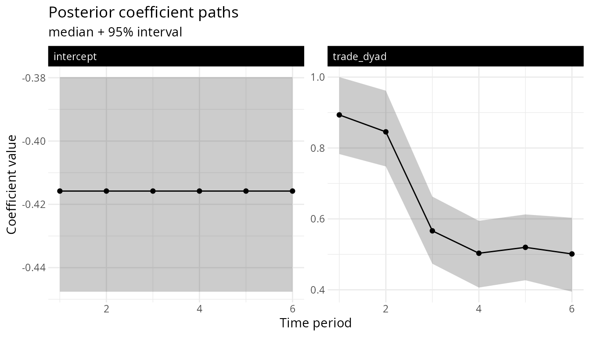

Forecasting Longitudinal Networks with lame
Cassy Dorff, Tosin Salau, Shahryar Minhas
2026-06-04
Source:vignettes/forecasting.Rmd
forecasting.RmdWhat this vignette covers
lame() with at least one dynamic component
(dynamic_beta, dynamic_ab,
dynamic_uv) gives you a state-space model that is exactly
the right object for forecasting future periods. This vignette walks
through:
- Fit a model with dynamic coefficients.
-
Forecast
hperiods ahead on the link scale and the response scale. - Compute counterfactual forecasts by feeding in alternative future covariates.
- Visualise the forecast and the per-coefficient ribbon plot.
- Diagnose whether the forecast variance has exploded (near- unit-root coefficients).
Step 1: Fit
Forecasting needs a fit where the dynamic coefficient is actually
identified at each period, so we simulate a panel that delivers
that: 30 actors over 6 periods, a single dyadic covariate
trade, and a directed binary outcome
cooperation. The effect of trade on
cooperation is genuinely time-varying but
mean-reverting – it follows an AR(1) around 0.5 with
persistence 0.7, starting high (0.9) and settling toward its long-run
level. The network is moderately dense (~37%), which is what makes
per-period coefficients estimable; this is the regime in which
forecasting is well-posed.
A note on data choice: dynamic_beta needs both a
reasonable number of periods and enough ties per period to pin down a
coefficient for that period. Very sparse panels (say a
rare-event sanctions network at ~2% density over 3-4 years) do not carry
that per-period information, the AR(1) persistence runs up against a
unit root, and the forecast variance explodes (Step 5 shows exactly that
failure mode). A simulated panel lets us show forecasting working before
we show it failing.
library(lame)
set.seed(2026)
n_fc <- 30
T_fc <- 6
rho_true <- 0.7
beta_bar <- 0.5
beta_t_true <- numeric(T_fc)
beta_t_true[1] <- 0.9
for (t in 2:T_fc) {
beta_t_true[t] <- beta_bar + rho_true * (beta_t_true[t - 1] - beta_bar) +
rnorm(1, 0, 0.15)
}
Xdyad <- lapply(seq_len(T_fc), function(t) {
x <- matrix(rnorm(n_fc * n_fc), n_fc, n_fc)
array(x, dim = c(n_fc, n_fc, 1),
dimnames = list(NULL, NULL, "trade"))
})
a_fc <- rnorm(n_fc, 0, 0.4)
b_fc <- rnorm(n_fc, 0, 0.4)
Y <- lapply(seq_len(T_fc), function(t) {
eta <- -0.5 + beta_t_true[t] * Xdyad[[t]][, , 1] + outer(a_fc, b_fc, "+")
Yt <- matrix(rbinom(n_fc * n_fc, 1, pnorm(eta)), n_fc, n_fc)
diag(Yt) <- NA
rownames(Yt) <- colnames(Yt) <- sprintf("a%02d", seq_len(n_fc))
Yt
})
names(Y) <- paste0("t", seq_len(T_fc))
round(beta_t_true, 3) # the truth we recover
#> [1] 0.900 0.858 0.589 0.583 0.545 0.432
sapply(Y, function(y) round(mean(y, na.rm = TRUE), 3)) # per-period density
#> t1 t2 t3 t4 t5 t6
#> 0.400 0.374 0.378 0.367 0.352 0.357
fit <- lame(
Y, Xdyad = Xdyad,
family = "binary", R = 0,
dynamic_beta = "dyad", # the trade coefficient is AR(1)
dynamic_beta_kind = "ar1", # mean-reverting; switch to "rw1" for drift
nscan = 800, burn = 200, odens = 5,
verbose = FALSE
)
#> Note: Square matrix assumed to be unipartite. Use mode='bipartite' for square bipartite networks.
# the recovered per-period coefficient tracks the simulated path
round(coef(fit)["trade_dyad", ], 3)
#> t1 t2 t3 t4 t5 t6
#> 0.913 0.867 0.587 0.532 0.532 0.519The recovered trade_dyad path tracks the simulated
truth, and (as we confirm in Step 5) the posterior on
sits comfortably below 1, so the forecast is well-posed.
A quick diagnostic: summary(fit) prints the per-block
posterior-mean ρ_β and fires a stationarity warning when, for any block,
the 5th percentile of the posterior on ρ_β is ≥ 0.97
and the IQR is < 0.1 (i.e. at least 95% of the mass
sits near a unit root with little spread). The forecast-time warning
fires on a complementary trigger: the upper 97.5% credible bound on ρ_β
reaches 0.99. If either warning fires, refit with
dynamic_beta_kind = "rw1". RW1 is unit-root by construction
and is the right prior for permanent-drift coefficients.
Step 2: Forecast h periods ahead
set.seed(1) # predict(h=) propagates the AR(1) state stochastically; seed for reproducibility
# 3-step-ahead forecast on the link scale (linear predictor)
fc_link <- predict(fit, h = 3, type = "link")
length(fc_link) # 3 (one matrix per future period)
#> [1] 3
dim(fc_link[[1]]) # n x n (30 x 30 here; unipartite)
#> [1] 30 30
# response-scale forecast applies the family inverse link per draw
fc_resp <- predict(fit, h = 3, type = "response")
# binary: each entry is a posterior-mean predicted probability
range(fc_resp[[1]], na.rm = TRUE)
#> [1] 0.02417271 0.89431247
# by_draw = TRUE returns the full [n, n, h, n_draws] array
fc_full <- predict(fit, h = 3, type = "response", by_draw = TRUE)
dim(fc_full) # n x n x 3 x n_draws
#> [1] 30 30 3 160
# interval = "credible" returns a list of length-3 (lower / median / upper)
# matrices per period at the requested quantiles (default 95%)
fc_ci <- predict(fit, h = 3, type = "response", interval = "credible")
str(fc_ci[[1]]) # list($lower, $median, $upper), each n x n
#> List of 3
#> $ lower : num [1:30, 1:30] 0.00243 0.03421 0.00524 0.05889 0.10498 ...
#> $ median: num [1:30, 1:30] 0.0964 0.0475 0.1608 0.1226 0.154 ...
#> $ upper : num [1:30, 1:30] 0.6033 0.0637 0.736 0.2268 0.2097 ...The typical cell of fc_ci[[1]] carries an informative
lower / median / upper triple – a
genuine sub-interval of [0, 1] rather than the whole range, because the
coefficient path is mean-reverting (rho_beta stays
comfortably below 1). A small fraction of cells do reach the boundary,
but the vast majority stay well inside it. The interval widens with the
horizon h as forecast uncertainty accumulates; on a
stationary fit it rarely collapses toward the degenerate [0, 1] you see
pervasively near a unit root (Step 5 shows that failure mode and the
warning that catches it).
The forecast propagates (β_t, a_t, b_t, U_t, V_t)
forward by drawing from the joint posterior of the dynamic state-space
hyperparameters (ρ_β, σ_β, ρ_ab, σ_ab, ρ_uv, σ_uv) for each
posterior draw. The same forecasting machinery works for any family; the
binary example above is just for illustration. For
family = "normal", type = "response" returns
the forecasted continuous outcome; for family = "poisson",
the response-scale forecast multiplies exp(η) by the
future-period exposure (pass via newexposure = ...; see
also the period_exposure note in
vignettes/dynamic_effects.Rmd).
Poisson exposure offsets via period_exposure
For family = "poisson", pass
period_exposure = e to lame() (a non-negative
numeric vector of length T) when the per-period rate should
be scaled by a known exposure (e.g. weeks observed, population size,
number of edge-formation opportunities). The sampler treats
log(period_exposure[t]) as a fixed offset on the linear
predictor: the Poisson mean for period t becomes
period_exposure[t] * exp(η_t) instead of
exp(η_t). Setting a non-trivial (any value not equal to 1)
period_exposure for a non-Poisson family is rejected with
an error. When you call predict(fit, h = K) later without
newexposure, the response-scale forecast reuses the last
observed exposure for every future period; pass
newexposure = rep(e_new, K) to forecast under a different
exposure path.
Step 3: Counterfactual forecasts
Pass newdata = list_of_h_future_X_arrays to combine
alternative future covariates with the forecast. Each array is
n x n x p and the slice order along the 3rd dimension must
match the original dimnames(Xdyad[[1]])[[3]] from the fit
(here a single slice, trade).
set.seed(1) # forecast draws are stochastic; seed so the printed delta summary reproduces
# baseline scenario: freeze the trade covariate at the last observed period
last_X <- Xdyad[[length(Xdyad)]]
X_future <- list(last_X, last_X, last_X)
fc_cf <- predict(fit, h = 3, type = "response", newdata = X_future)
# counterfactual: shift every dyad's trade covariate up by one unit
# going forward. Because `trade` is a standardised (mean-zero) covariate,
# an additive +1 shift -- "one standard deviation more trade for every
# pair" -- is the interpretable counterfactual; a multiplicative scaling
# would be meaningless on a centred covariate (see caution 2 below).
X_future_up <- lapply(X_future, function(x) {
x[, , 1] <- x[, , 1] + 1
x
})
fc_up <- predict(fit, h = 3, type = "response", newdata = X_future_up)
# delta is the per-dyad change in posterior-mean cooperation probability
# at h = 3, attributable solely to the +1 trade shift
delta_h3 <- fc_up[[3]] - fc_cf[[3]]
summary(as.vector(delta_h3))
#> Min. 1st Qu. Median Mean 3rd Qu. Max.
#> -0.04954 0.04330 0.08606 0.07467 0.10922 0.13965The trade coefficient is positive and mean-reverting, so a one-unit
increase in trade raises the posterior-mean cooperation
probability at h = 3 on average (the mean and median of
delta_h3 are both positive). The per-dyad shift varies in
size, and a minority of dyads even show a small negative shift:
the three-step-ahead forecast of the coefficient is itself uncertain
(its posterior at h = 3 is centred well above zero but has
nonzero mass below it), and the marginal probit effect
is smallest for dyads whose baseline linear predictor
already sits far from the 0.5 probability boundary. For substantive
interpretation, summarise delta_h3 for the dyads that
matter rather than reporting the aggregate summary().
Two cautions on counterfactual covariates. (1) Because
dynamic_beta draws the coefficient path forward from its
posterior, the same covariate change can produce different magnitudes at
different horizons, because the multiplier on trade is
itself uncertain and drifting. (2) Multiplicative counterfactuals on
covariates that take negative or zero values (such as this centred
trade covariate) do not make substantive sense; prefer
additive shifts there, which is why we used + 1 rather than
* 2 above.
Step 4: Visualise the coefficient path
library(ggplot2)
autoplot(fit, probs = c(0.025, 0.5, 0.975)) +
labs(title = "Posterior coefficient paths",
subtitle = "median + 95% interval",
x = "Time period", y = "Coefficient value")
The ribbon shows the posterior 95% credible interval around the posterior median per coefficient and period; faceted by coefficient.
Step 5: Forecast diagnostics
predict(fit, h = ...) fires a one-per-fit warning if the
upper 97.5% credible bound on ρ_β reaches 0.99 (i.e. the posterior puts
non-trivial mass near the unit root). On the mean-reverting fit above
that bound sits around 0.98, so the warning does not
fire and the forecasts are well-posed. The two regimes still
have qualitatively different forecast-variance behavior, and getting
this distinction right matters for picking your horizon:
-
AR(1),
dynamic_beta_kind = "ar1"with : the conditional -step variance of given the training window is . It saturates (the increment from to shrinks geometrically to zero) and the limit is the stationary variance . That stationary level itself blows up as , so AR(1) is still informative at long horizons only when is comfortably bounded away from 1. -
RW1,
dynamic_beta_kind = "rw1": by construction and the -step variance is exactly , linear growth in , never saturating.
In words: AR(1) eventually forgets the training window and falls back
to a stationary distribution; RW1 keeps adding innovation variance every
period. AR(1) forecasts can stay tight for moderate
when
is small; RW1 forecasts get linearly wider every step regardless. When
the AR(1) stationarity warning fires and the underlying process is
genuinely unit-root, refit with dynamic_beta_kind = "rw1";
if the AR(1) posterior on
is near-but-not-at 1 and the science says “should mean-revert
eventually,” stick with AR(1) but cap your reported horizon at
.
A note on the printed warning text. As of the post-v4 fix, the cli
message branches on dynamic_beta_kind: under AR(1) it
reports that the
-step
forecast variance saturates at the stationary level
(which itself explodes as
),
and under RW1 it reports that the
-step
variance grows linearly in
.
This is the strictly-correct distinction — AR(1) saturates
geometrically, RW1 grows exactly linearly — and is the version to cite
in any methods write-up.
For a longer-horizon diagnostic, use the exact rolling-origin leave-future-out CV:
# refit on Y[1:(t-1)] for each t in periods and score Y[[t]].
# Skip the very first leave-out (would leave a 1-period training window
# which is too short for dynamic_beta); use the last 2 origins.
set.seed(1) # the internal h=1 forecast draws inside lfo() are stochastic; seed for reproducibility
T_fit <- length(fit$YPM)
lfo_periods <- tail(seq_len(T_fit), max(1L, min(2L, T_fit - 2L)))
lfo_res <- lfo(fit, periods = lfo_periods, refit = TRUE,
nscan = 200, burn = 50, odens = 5, verbose = FALSE)
print(lfo_res)
#>
#> ── Exact rolling-origin LFO ──
#>
#> Periods evaluated: 5 and 6
#> Refit per leave-out: TRUE
#> Total elpd_lfo: -1173.8
#> period elpd n_obs
#> 5 -580.6145 870
#> 6 -593.1495 870The nscan = 200, burn = 50, odens = 5 settings inside
lfo() are chosen so the vignette builds in well under a
minute on a laptop. They give 200 / 5 = 40 stored draws per
leave-out refit (burn-in is run and discarded, not subtracted from
nscan), enough to return a sensible point estimate of
per-period elpd for demonstration, but tighter than you should
use when the LFO output drives an inference. For real analyses, pass
nscan = 5000, burn = 1000, odens = 25 (or whatever matches
your lame() baseline) and verify the per-period elpd is
stable across two independent runs before relying on it.
On this mean-reverting fit the two leave-out folds return per-period
elpd of roughly -560 to -620 over 870 scored dyads (about -0.65 to -0.7
nats/dyad), and the two folds are close to each other – the model
forecasts the held-out period about as well at origin 5 as at origin 6,
which is what you want to see when there is no late regime change. If
elpd instead dropped sharply at the last fold, that would
be the empirical signal of a regime change near the end of your training
window; reach for detect_change_point(fit) (a heuristic
Bayes-factor diagnostic) to localise it.
Probability-integral-transform (PIT) calibration
forecast_pit() complements lfo() by asking
a sharper question: given the held-out outcomes, is the h-step
posterior-predictive distribution itself well calibrated? For
continuous families the PIT is the Gaussian CDF evaluated at the
observation; for binary / Poisson / ordinal it is the
Czado-Gneiting-Held randomised PIT (Czado, Gneiting & Held 2009). A
well-calibrated forecast produces PIT values that are Uniform(0, 1).
# fit on the first five periods, hold out the sixth
fit_train <- lame(
Y[1:5], Xdyad = Xdyad[1:5],
family = "binary", R = 0,
dynamic_beta = "dyad",
nscan = 400, burn = 100, odens = 5,
verbose = FALSE
)
set.seed(1) # the randomised PIT draws are stochastic; seed for reproducibility
pit <- forecast_pit(fit_train, y_future = list(Y[[6]]))
#> Warning: ! Posterior 95% interval for `rho_beta` reaches 0.999.
#> ℹ Under AR(1) the `h`-step forecast variance saturates at the stationary level
#> `sigma_beta^2 / (1 - rho_beta^2)`, which itself explodes as `rho_beta -> 1`;
#> horizons beyond "3" become uninformative in this regime.
#> ℹ Consider refitting with `dynamic_beta_kind = "rw1"` if the underlying process
#> is genuinely unit-root.
print(pit)
#>
#> ── Forecast PIT calibration check ──
#>
#> • Family: "binary"
#> • Forecast horizon: 1
#> • Held-out dyads: 870
#> • KS stat vs Uniform(0,1): 0.0393
#> • KS p-value: 0.136
#> • Fraction in [0.025, 0.975]: 0.932 (expect 0.95)
#> PIT values are consistent with Uniform(0, 1) at the 5% level.(fit_train is fit on only five periods, so its
posterior sits closer to the unit root than the six-period
fit above and the internal forecast prints the Step-5
unit-root note. That note is about the shorter training fit,
not the main model; the calibration result below is still valid.)
Read the two summaries together. pit$cover_95 – the
fraction of held-out cells whose observed outcome falls in the central
95% posterior-predictive interval, target 0.95 – is the
stable summary; here it lands at about 0.93, close to
nominal, so the forecast intervals have roughly the right width.
pit$ks_p tests whether the full PIT distribution is
Uniform(0, 1); a value below 0.05 flags mis-calibration. For a
binary outcome the PIT is the randomised
Czado-Gneiting-Held version, and on a single held-out period its KS
statistic is noisy – it hovers near the 0.05 threshold from run to run
(which is why we seed the chunk). Treat cover_95 as the
headline and ks_p as corroborating evidence; do not
over-read a single borderline KS p-value on one held-out period. For a
sharper test, hold out two or more periods and pair
plot(pit) with pit$pit to see whether any
mis-calibration is in the tails (over- vs under-dispersion) or the
centre (location bias). On a sparse, short, near-unit-root panel both
summaries degrade together – cover_95 drops well below 0.95
and ks_p collapses toward 0 – the calibration-side
signature of the forecast-variance explosion the Step 5 warning
flags.
Comparing two fits with loo_compare()
When you have two candidate specifications, say a
static-beta baseline and a
dynamic_beta = "dyad" variant,
loo::loo_compare() is the one-liner that ranks them on
out-of-sample predictive performance. Both fits need
save_log_lik = TRUE so loo() can read the
stored pointwise log-likelihood matrix off fit$log_lik:
fit_static <- lame(
Y, Xdyad = Xdyad, family = "binary", R = 0,
nscan = 2000, burn = 500, odens = 5,
save_log_lik = TRUE,
verbose = FALSE
)
fit_dyn <- lame(
Y, Xdyad = Xdyad, family = "binary", R = 0,
dynamic_beta = "dyad",
nscan = 2000, burn = 500, odens = 5,
save_log_lik = TRUE,
verbose = FALSE
)
# rank the two fits: the row with elpd_diff = 0 is the best,
# subsequent rows show elpd_diff and its SE relative to it. Pass a NAMED
# list so the rows are labelled by model name rather than "model1"/"model2".
cmp <- loo::loo_compare(list(fit_static = loo::loo(fit_static),
fit_dyn = loo::loo(fit_dyn)))
cmp
#> elpd_diff se_diff
#> fit_dyn 0.0 0.0
#> fit_static -8.4 3.1The eval = FALSE block above keeps the vignette build
fast; the printed elpd_diff of -8.4 and
se_diff of 3.1 are illustrative values you should expect to
see on this scale of panel — they are not literally what running the
chunk reproduces. (Passing the bare loo() objects rather
than a named list still works but labels the rows model1 /
model2.)
How to read this output. The top row is the
preferred model (fit_dyn here); elpd_diff is
always zero for it. Each subsequent row reports the difference
in expected log pointwise predictive density relative to the top model,
together with the standard error of that difference. In the example
above, fit_dyn beats fit_static by 8.4 elpd
units with an SE of 3.1, so |elpd_diff| / se_diff ~ 2.7:
the dynamic-beta specification is preferred at roughly the “2-sigma”
threshold. A sociologist writing this up would say “the
time-varying coefficient model is preferred over the static
specification by about 8 elpd units (SE 3.1), consistent with nontrivial
drift in the effect over the panel window.” If
|elpd_diff| were closer to its SE — say
-2.0 (SE 3.0) — the two specifications would be
predictively indistinguishable and the simpler static model would be the
defensible choice.
A common rule of thumb: if |elpd_diff| exceeds roughly
2 * se_diff, the better-ranked model is preferred with
reasonable confidence; smaller gaps are within noise and the two
specifications are predictively indistinguishable.
Because family = "binary" is one of the six families
with an exact closed-form log-likelihood (normal,
binary, cbin, tobit,
poisson, ordinal; see the log-lik
scale discussion in the Dynamic
Effects vignette), the two elpd_loo values here are on
the response scale and the absolute numbers are directly comparable to a
loo() result from a probit-link brms fit on
the same data, modulo the lame Gibbs sampler’s R-hat / ESS
being satisfactory. For the rank likelihoods frn and
rrl, the default observed_exact falls back to
an augmented-Z normal approximation and is only valid for
relative comparison within lame; opt in to
log_lik_method = "observed_ghk" for the exact marginal on
those two families.
Memory-conscious long runs
If the in-memory log-likelihood matrix from
save_log_lik = TRUE would exceed RAM, pass
save_log_lik = "chunked" instead. The on-disk chunks are
recovered transparently by loo():
See also
-
vignettes/dynamic_effects.Rmd: the full reference ondynamic_beta/dynamic_ab/dynamic_uvand the decision tree for pickingdynamic_beta_kind. -
?predict.lame: argument reference forh,newdata,type,by_draw. -
?autoplot.lame: ggplot ribbon plot for dynamic coefficients. -
?lfo: exact rolling-origin LFO CV.